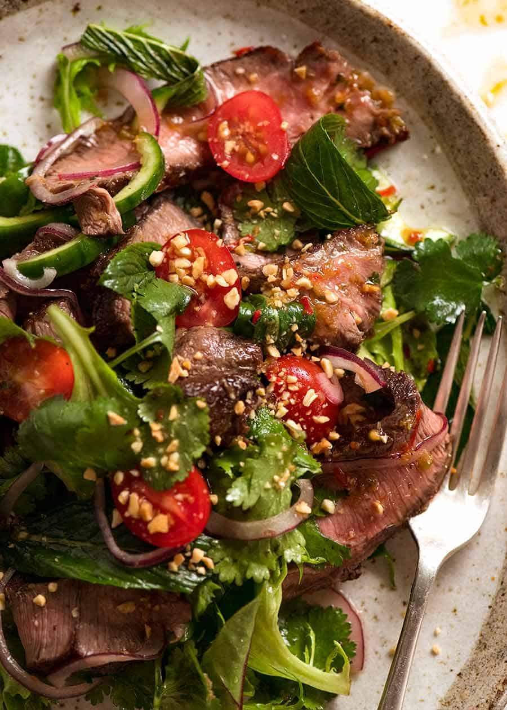

Thai Beef Salad

Ingredients
- fresh lime juice
- garlic clove
- palm sugar
- fish sauce
- fresh sesame oil
- fresh soy sauce
- fresh ginger
- beef steak
- red onion
- fresh red chillies
- fresh mint
- fresh coriander
- fresh Thai basil
Instructions
- Whisk together lime juice, garlic, fish sauce, sesame oil, soy sauce, ginger and palm sugar in a jug. Place the steak in a glass or ceramic dish. Drizzle with half the dressing. Cover with plastic wrap and place in the fridge, turning occasionally, for 2 hours to develop the flavours.
- Preheat a barbecue grill or chargrill pan on high. Cook steak on grill for 2-3 minutes each side for medium or until cooked to your liking. Transfer to a plate. Cover with foil and set aside for 10 minutes to rest.
- Place the onion, chilli, mint, coriander, basil and lime leaves in a large bowl. Thinly slice steak across the grain and add to the salad. Drizzle with remaining dressing and gently toss to combine. Divide salad among bowls and serve immediately.